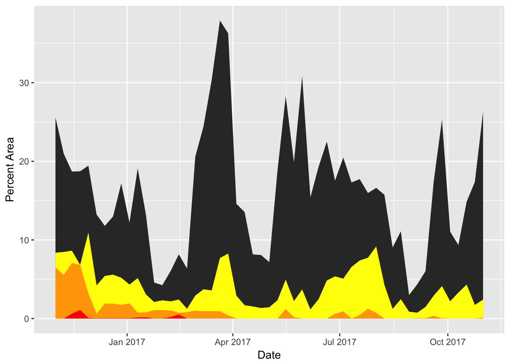

Texas is no stranger to drought: the state has faced several droughts in recent decades, including the most recent and most severe drought that began in 2011. Texas has faced increasing demand for water to meet the needs of its rapidly growing population. Moreover, climate change has led to Texas experiencing an increase in drought events since 2011, which has intensified the for an impactful solution for state’s water situation.
Texas is an enormous body of land, and it is difficult to conceptualize the degree of drought without a visual representation. In particular, spatial and temporal visualization can improve our knowledge on the intensity of the drought’s implication on the area throughout Texas. For visualization, the manner of the exploratory focus should be clearly investigated, where factors causing drought range from “Temperature” to “Precipitation” will be analyzed.
Analysis on the relationships between factors of drought, and the spread of the drought area, will be investigated.
# packages installment
install.packages("ggplot2",repos = "http://cran.us.r-project.org")##
## The downloaded binary packages are in
## /var/folders/91/f5ydhxb13ybgmf_b72hhpdk80000gn/T//RtmpnPmvMU/downloaded_packageslibrary(ggplot2)
knitr::opts_chunk$set(cache=TRUE)
# data loading
tx_1y <- read.csv('data/tx_1y.csv')# visualization the drought percent area in 1 year
# convert table and date formet
as.data.frame(tx_1y)## ReleaseDate None D0 D1 D2 D3 D4
## 1 20171031 71.18 26.30 2.41 0.11 0.00 0
## 2 20171024 80.89 17.37 1.74 0.00 0.00 0
## 3 20171017 80.83 14.85 4.32 0.00 0.00 0
## 4 20171010 87.34 9.35 3.31 0.00 0.00 0
## 5 20171003 86.76 11.04 2.20 0.00 0.00 0
## 6 20170926 70.54 25.29 4.13 0.04 0.00 0
## 7 20170919 79.27 17.46 2.92 0.35 0.00 0
## 8 20170912 92.45 6.03 1.48 0.04 0.00 0
## 9 20170905 94.84 4.36 0.75 0.04 0.00 0
## 10 20170829 96.14 2.99 0.87 0.00 0.00 0
## 11 20170822 86.44 11.09 2.47 0.00 0.00 0
## 12 20170815 89.71 9.05 1.23 0.00 0.00 0
## 13 20170808 79.97 15.74 4.29 0.00 0.00 0
## 14 20170801 73.48 16.62 9.17 0.73 0.00 0
## 15 20170725 75.04 15.96 7.73 1.26 0.00 0
## 16 20170718 74.42 17.73 7.39 0.46 0.00 0
## 17 20170711 76.12 17.31 6.57 0.00 0.00 0
## 18 20170704 73.51 20.48 5.08 0.92 0.00 0
## 19 20170627 76.48 17.54 5.37 0.61 0.00 0
## 20 20170620 72.65 22.50 4.84 0.00 0.00 0
## 21 20170613 78.23 19.31 2.47 0.00 0.00 0
## 22 20170606 83.43 15.41 1.16 0.00 0.00 0
## 23 20170530 65.50 30.80 3.70 0.00 0.00 0
## 24 20170523 77.70 19.89 2.22 0.19 0.00 0
## 25 20170516 65.58 28.27 4.95 1.20 0.00 0
## 26 20170509 78.86 18.82 2.33 0.00 0.00 0
## 27 20170502 91.38 7.18 1.44 0.00 0.00 0
## 28 20170425 90.58 8.08 1.34 0.00 0.00 0
## 29 20170418 90.30 8.16 1.54 0.00 0.00 0
## 30 20170411 84.74 13.55 1.70 0.01 0.00 0
## 31 20170404 82.49 14.59 2.91 0.01 0.00 0
## 32 20170328 55.06 36.27 8.26 0.40 0.00 0
## 33 20170321 53.46 37.91 7.70 0.93 0.00 0
## 34 20170314 65.12 30.36 3.58 0.93 0.00 0
## 35 20170307 70.92 24.43 3.72 0.93 0.00 0
## 36 20170228 75.50 20.57 2.92 1.01 0.00 0
## 37 20170221 91.57 6.36 1.25 0.82 0.00 0
## 38 20170214 88.14 8.17 2.42 0.73 0.53 0
## 39 20170207 90.56 6.04 2.19 1.03 0.19 0
## 40 20170131 92.34 4.25 2.32 1.08 0.01 0
## 41 20170124 92.24 4.57 2.11 1.08 0.01 0
## 42 20170117 82.78 13.20 3.07 0.79 0.15 0
## 43 20170110 74.87 19.10 5.15 0.75 0.14 0
## 44 20170103 81.50 12.20 4.33 1.93 0.04 0
## 45 20161227 75.85 17.18 5.19 1.74 0.04 0
## 46 20161220 79.50 12.98 5.58 1.90 0.04 0
## 47 20161213 80.86 11.78 5.42 1.90 0.04 0
## 48 20161206 81.90 13.23 4.22 0.62 0.03 0
## 49 20161129 66.37 19.44 10.92 3.19 0.08 0
## 50 20161122 66.53 18.73 6.82 6.82 1.09 0
## 51 20161115 64.98 18.70 8.63 7.06 0.63 0
## 52 20161108 64.99 20.98 8.47 5.55 0.00 0
## 53 20161101 59.55 25.58 8.37 6.50 0.00 0tx_1y$ReleaseDate<-as.Date(as.character(tx_1y$ReleaseDate),format="%Y%m%d");## Warning in strptime(x, format, tz = "GMT"): unknown timezone 'default/
## America/New_York'ggplot(tx_1y, aes(ReleaseDate, tx_1y$D0))+geom_area()+ geom_area(aes(x = ReleaseDate,y=tx_1y$D1), fill='yellow') +geom_area(aes(x = ReleaseDate,y=tx_1y$D2),fill='orange')+geom_area(aes(x = ReleaseDate,y=tx_1y$D3),fill='red') + xlab("Date")+ylab("Percent Area")  The output graph should be shown as below: